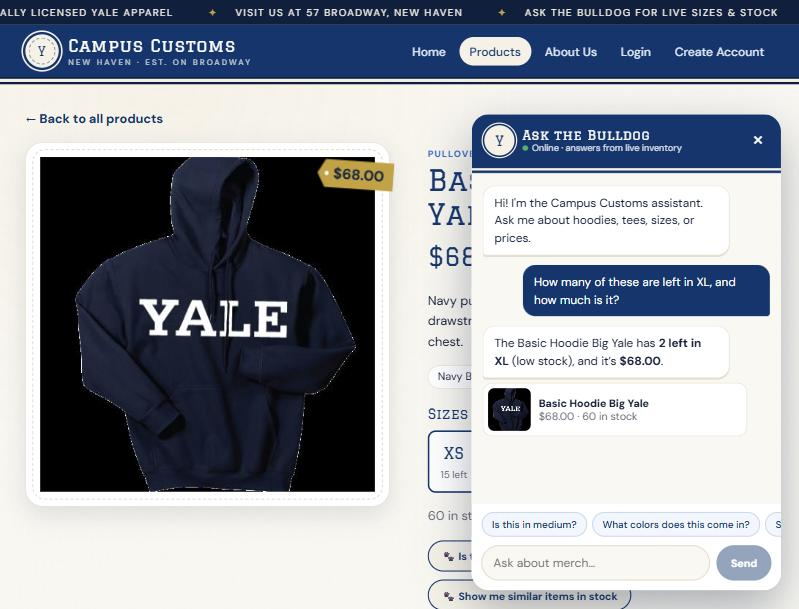
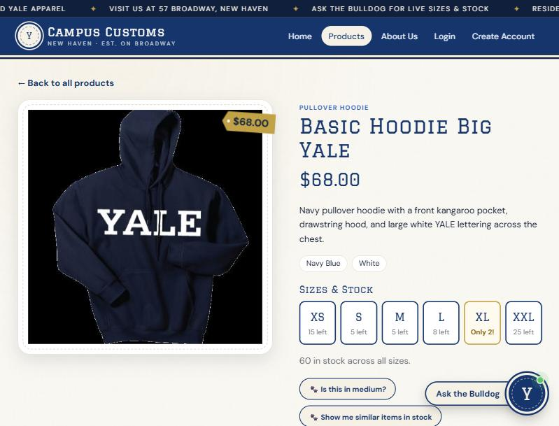
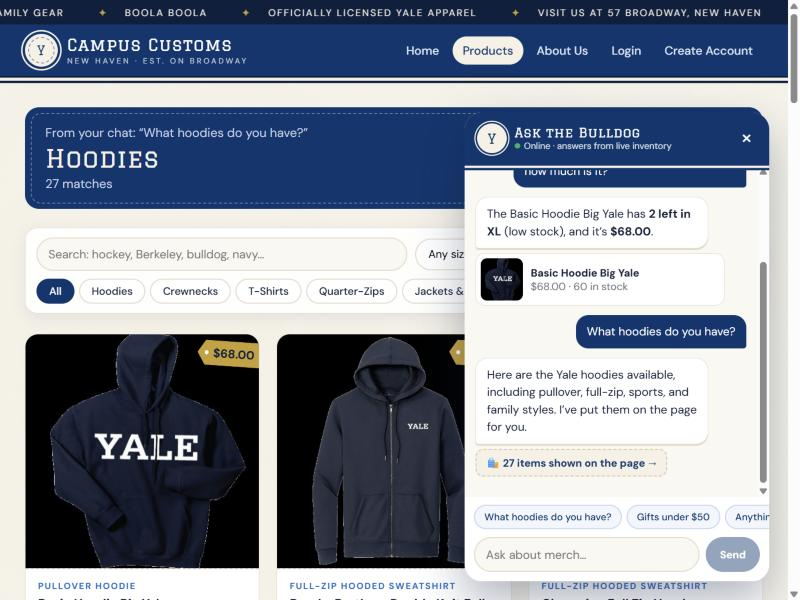
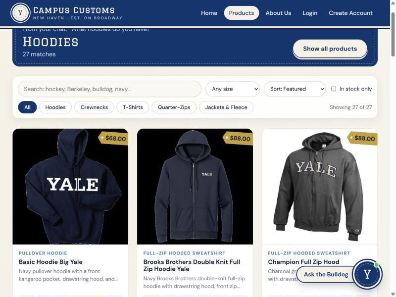
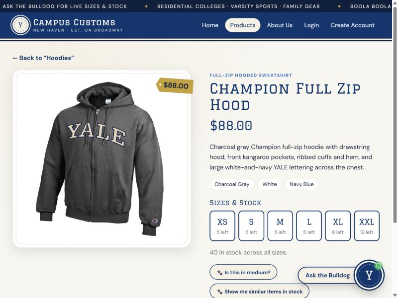
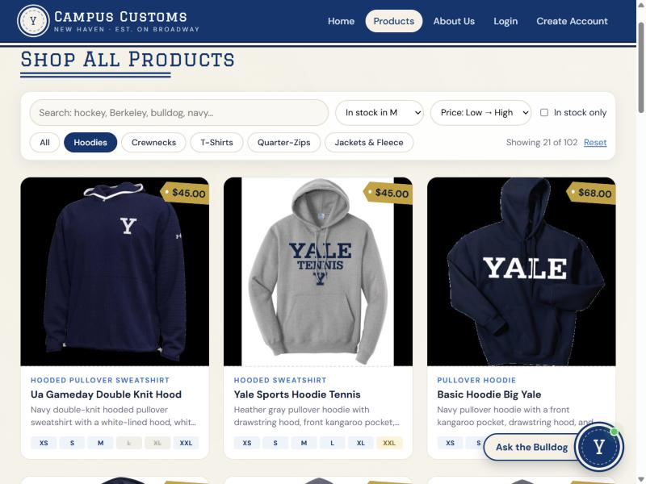
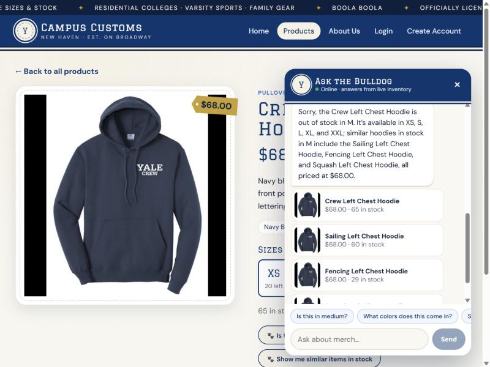

Problem 11 · Live testing of the running site (React + Vite frontend, FastAPI + Pydantic AI backend, campus_customs.db)
Test setup:
Frontend http://localhost:5173 (Vite) → backend http://127.0.0.1:8000 (run from backend/ with uvicorn main:app --port 8000)
Agent model: gpt-5.6-luna via Portkey. Data: data/campus_customs.db. Shopper browsing as a guest.
All screenshots were captured from the live app on 2026-10-07. Database values were queried directly from SQLite to compare.
Check 1: Chat checks an item's inventory level (stock & price from the database)
✔ PASS
Steps: Open the Basic Hoodie Big Yale product page → open "Ask the Bulldog" → ask "How many of these are left in XL, and how much is it?"

What this proves: the agent understood "these" meant the product on screen (page context). It answered "2 left in XL (low stock)… $68.00", which exactly matches the database (XL = 2, price = 68.0) shown in the table below. The answer came from the check_stock tool, not a guess.

What this proves: the same product page, before chatting. The size tiles (XS 15, S 5, M 5, L 8, XL "Only 2!", XXL 25) and the $68.00 price tag come from the same database, so the page and the chatbot agree.
Database ground truth (inventory + catalogue for basic-hoodie-big-yale)
price
XS
S
M
L
XL
XXL
68.0
15
5
5
8
2
25
Check 2: Category question → dynamic search-result cards on the page
✔ PASS
Steps: From the Home page, ask the chat "What hoodies do you have?"

What this proves: the agent searched the catalog and returned structured results (product_ids + page_title: "Hoodies"). The site then moved itself from Home to the Products page and showed the banner "Hoodies · 27 matches · From your chat: 'What hoodies do you have?'". The chat confirms "27 items shown on the page →".

What this proves: the matches show up as real product cards: image, name, hangtag price, garment type, short description, and a size-availability strip. The toolbar shows "Showing 27 of 27", and the DB has exactly 27 hood-style products (garment_type LIKE '%hood%').

What this proves: clicking a chat-loaded card (Champion Full Zip Hood) still opens the Problem 3 single-item page: large image on one side, full description, price, and stock by size on the other. The "← Back to 'Hoodies'" link returns to the same search results.
Check 3: Usability feature from Problem 9 (Products toolbar, F1)
✔ PASS
Steps: Products page → click the Hoodies chip → choose "In stock in M" → sort "Price: Low → High".

What this proves: the toolbar narrows 102 products to 21 hoodies a medium-size shopper can actually buy, cheapest first ($45.00, $45.00, $68.00…). Hoodies sold out in M (e.g. Ice Hockey Left Chest Hoodie, M = 0) are correctly hidden. Each card's size strip confirms M is in stock, and sold-out sizes are struck through (e.g. L and XL on the first card).
Bonus: Problem 9 agent feature (B1, find_similar_products)
Steps: On the Crew Left Chest Hoodie page (M = 0 in the DB), tap the "🐾 Is this in medium?" button.

What this proves: the bot says clearly that the item is out of stock in M, then uses the new tool to suggest similar hoodies that are in stock in M (Sailing M = 25, Fencing M = 15, Squash M = 5 in the DB), shown as clickable cards. An out-of-stock dead end becomes a possible sale.